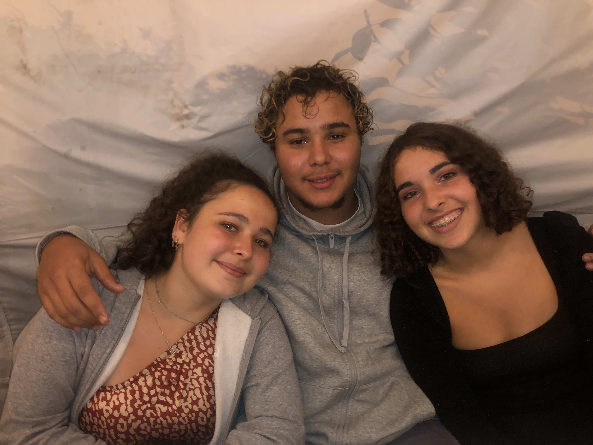
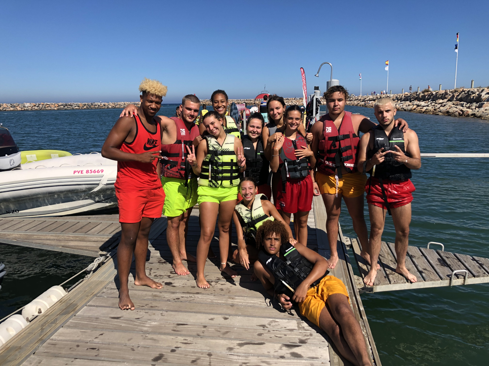
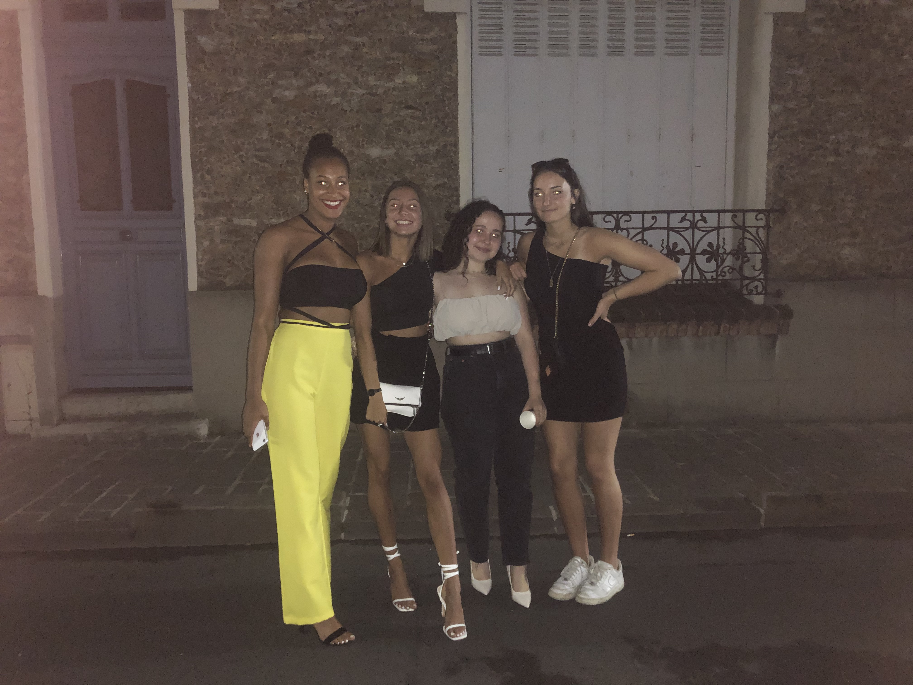

Je suis passionnée de cuisine depuis mon enfance et j’adore sortir avec mes amis. Je suis réservée et assidue dans ce que j’entreprends. J’étudie actuellement à l’EMLV afin de pouvoir axer ma carrière professionnelle vers le marketing.
Discover Le WagonJe suis passionnée de cuisine depuis mon enfance. J’aime m’investir dans l’élaboration d’une création gustative car cela me permet de m’enfermer dans une bulle et d’être concentrée à 100% sur mon objectif. J’ai toujours voulu faire de cette passion mon métier et ce jusqu’à l’année dernière. En effet, le rythme de vie de ce métier m’a fait changer d’avis. Néanmoins, la passion est toujours autant présente.
J’adore sortir avec mes amis car ce sont les personnes avec qui je me sens le plus à l’aise mais aussi les personnes qui me connaissent le mieux (après mes parents😄). Avec mes amis je peux être moi-même et je sais qu’en sortant avec eux je ne peux que m’amuser et retrouver le sourire en cas de mauvais jour.
  Je possède actuellement un Bac ES section européenne espagnol. J’ai toujours aimé voyager et découvrir de nouvelle culture. En choisissant l’EMLV, je m’assure la possibilité de partir étudier à l’étranger et donc de découvrir une nouvelle culture. De plus, j’aimerais avoir la possibilité d’allier ma passion pour la cuisine et ma vie professionnel en devenant, pourquoi pas la future directrice marketing chez Pierre Hermé :).